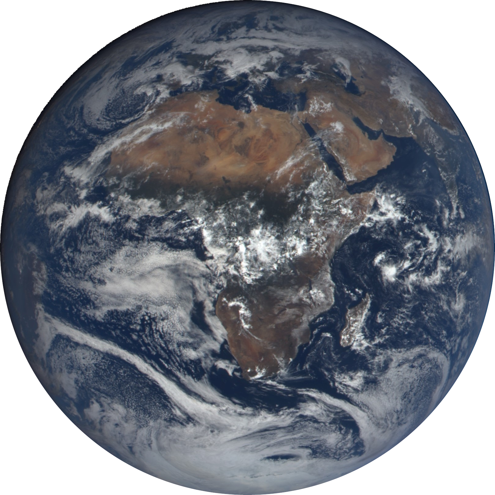
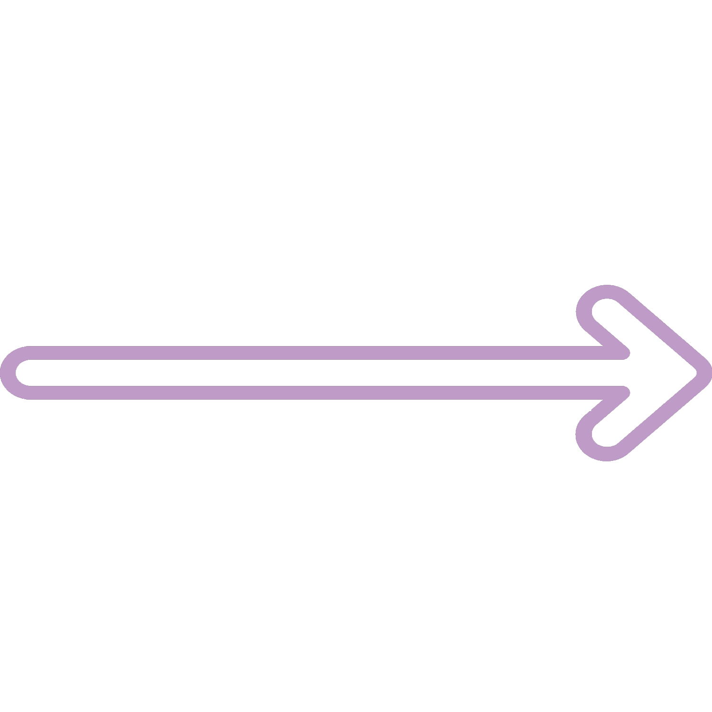

Nicolux Duboudgra
Medecin a distance, il lui suffit de se connecter a la machine appropriee pour que ses doigts dansent sur les corps. L’habitude de l’informatique lui a donné de legeres compétences dans ce domaine.
Benoit Donne
Employe d'une grande entreprise, Benoit Donne est un excellent atout pour la gestion des systemes informatiques. Il a de legeres capacites en mecanique pour reparer son tacot.
George Jepakui
Depuis sa plus tendre enfance, George Jepakui est passionne par la programmation. Habitant chez ses parents medecins, il a des bases de medecine.

Alexis Souritard
Recemment il s’est trouve une passion pour l'informatique et s'est investi a 100% dedans.
Luc Beurre
N'ayant pas eu le choix a cause de son pere qui savait que ce serait un genie, il l'a forme a la programmation et aux rudiments de la cuisine.

Pedro El Rico
Ayant etudie a l'universite d'ingenierie avancee de sa ville natale, Perdo El Rico a developpe des compétences de tres haut niveau en ingenierie et en cuisine lorsqu'il etait etudiant.
David Samuel
Apres avoir falsifie ses competences et avoir ete embauche en tant qu’ingenieur, il s'est debrouille comme il le pouvait pour survivre. Son point fort apres l'ingenierie est l'informatique.

Ethan Devandaume
Rompu aux activites mecaniques depuis son plus jeune age avec son grand-pere malade, il a developpe de solides compétences en ingenierie et en medecine.
Alexei Donnov
Alexei Donnov a conclu un contrat avec le dirigeant d’une entreprise d'ingenierie quand il etait petit, depuis il sert en tant que mecanicien dans divers vaisseaux.

Berenice Passinice
Berenice Passinice a gouté des plats exquis et depuis est tombe amoureux de la cuisine, il a l'habitude de reparer ses instruments de cuisine avec une mecanique rudimentaire.

Ibrahim Mahomet
eédecin generaliste dans un cabinet peu recommande, les machines tombent si souvent en panne qu’il a pris l’habitude de reparer les equipements en pleine operation.

Baptiste contigue
Ayant experimente la facilite de la cuisine moderne, il s’est dirigé vers ce milieu pour ne pas trop s'embeter. Son second travail lui a donne des competences d'informatique.
Jean-Louis Vasseur
Tres habitué a la liberte culinaire dans sa jeunesse et a la bonte de la medecine, il paraissait logique que Jean-Louis se dirige vers la cuisine medicale.
Francesco Frerari
Concentre sur la cuisine, Francesco en a negligé tout le reste, une poale en fer et un feu, c’est tout ce dont il a besoin pour creer des repas d'exception.

Thomas Pasqualine
Medecin therapeute depuis plusieurs annees et pere de famille, il a acquis d’excellentes competences en cuisine comme en medecine pour soigner ses enfants.